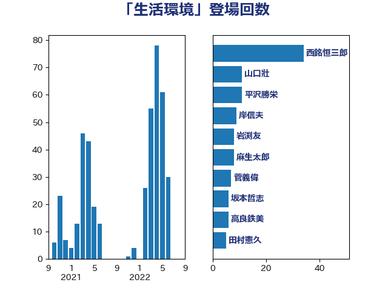

単語「生活環境」

| 西銘恒三郎 | 自由民主党 | 34 回 |
| 山口壯 | 自由民主党 | 11 回 |
| 平沢勝栄 | 自由民主党 | 11 回 |
| 岸信夫 | 自由民主党 | 9 回 |
| 岩渕友 | 日本共産党 | 8 回 |
| 麻生太郎 | 自由民主党 | 8 回 |
| 菅義偉 | 自由民主党 | 7 回 |
| 坂本哲志 | 自由民主党 | 6 回 |
| 高良鉄美 | 無所属 | 6 回 |
| 田村憲久 | 自由民主党 | 5 回 |
| 上川陽子 | 自由民主党 | 4 回 |
| 小泉進次郎 | 自由民主党 | 4 回 |
| 川田龍平 | 立憲民主党 | 4 回 |
| 田村貴昭 | 日本共産党 | 4 回 |
| 萩生田光一 | 自由民主党 | 4 回 |
| 野田聖子 | 自由民主党 | 4 回 |
| 金子恵美 | 立憲民主党 | 4 回 |
| 伊波洋一 | 無所属 | 3 回 |
| 山下芳生 | 日本共産党 | 3 回 |
| 斉藤鉄夫 | 公明党 | 3 回 |
| 末松信介 | 自由民主党 | 3 回 |
| 美延映夫 | 日本維新の会 | 3 回 |
| 重徳和彦 | 立憲民主党 | 3 回 |
| 亀岡偉民 | 自由民主党 | 2 回 |
| 伊藤孝江 | 公明党 | 2 回 |
| 加藤勝信 | 自由民主党 | 2 回 |
| 務台俊介 | 自由民主党 | 2 回 |
| 國重徹 | 公明党 | 2 回 |
| 小寺裕雄 | 自由民主党 | 2 回 |
| 山岸一生 | 立憲民主党 | 2 回 |
| 山本剛正 | 日本維新の会 | 2 回 |
| 後藤茂之 | 自由民主党 | 2 回 |
| 新垣邦男 | 立憲民主党 | 2 回 |
| 新妻秀規 | 公明党 | 2 回 |
| 松野博一 | 自由民主党 | 2 回 |
| 梶山弘志 | 自由民主党 | 2 回 |
| 横沢高徳 | 立憲民主党 | 2 回 |
| 泉健太 | 立憲民主党 | 2 回 |
| 石井正弘 | 自由民主党 | 2 回 |
| 神津たけし | 立憲民主党 | 2 回 |
| 菅家一郎 | 自由民主党 | 2 回 |
| 赤澤亮正 | 自由民主党 | 2 回 |
| 足立康史 | 日本維新の会 | 2 回 |
| 高木かおり | 日本維新の会 | 2 回 |
| 高橋千鶴子 | 日本共産党 | 2 回 |
| おおつき紅葉 | 立憲民主党 | 1 回 |
| 一谷勇一郎 | 日本維新の会 | 1 回 |
| 世耕弘成 | 自由民主党 | 1 回 |
| 中谷元 | 自由民主党 | 1 回 |
| 井上貴博 | 自由民主党 | 1 回 |
| 伊藤孝恵 | 国民民主党 | 1 回 |
| 伊藤忠彦 | 自由民主党 | 1 回 |
| 佐藤茂樹 | 公明党 | 1 回 |
| 倉林明子 | 日本共産党 | 1 回 |
| 勝部賢志 | 立憲民主党 | 1 回 |
| 古川禎久 | 自由民主党 | 1 回 |
| 吉田統彦 | 立憲民主党 | 1 回 |
| 和田義明 | 自由民主党 | 1 回 |
| 嘉田由紀子 | 無所属 | 1 回 |
| 室井邦彦 | 日本維新の会 | 1 回 |
| 宮路拓馬 | 自由民主党 | 1 回 |
| 小西洋之 | 立憲民主党 | 1 回 |
| 小里泰弘 | 自由民主党 | 1 回 |
| 尾崎正直 | 自由民主党 | 1 回 |
| 山添拓 | 日本共産党 | 1 回 |
| 山田勝彦 | 立憲民主党 | 1 回 |
| 岸田文雄 | 自由民主党 | 1 回 |
| 岸真紀子 | 立憲民主党 | 1 回 |
| 平山佐知子 | 無所属 | 1 回 |
| 平沼正二郎 | 自由民主党 | 1 回 |
| 庄子賢一 | 公明党 | 1 回 |
| 徳永エリ | 立憲民主党 | 1 回 |
| 打越さく良 | 立憲民主党 | 1 回 |
| 早稲田ゆき | 立憲民主党 | 1 回 |
| 本村伸子 | 日本共産党 | 1 回 |
| 杉久武 | 公明党 | 1 回 |
| 松島みどり | 自由民主党 | 1 回 |
| 根本匠 | 自由民主党 | 1 回 |
| 森屋宏 | 自由民主党 | 1 回 |
| 森屋隆 | 立憲民主党 | 1 回 |
| 森山浩行 | 立憲民主党 | 1 回 |
| 池下卓 | 日本維新の会 | 1 回 |
| 浜地雅一 | 公明党 | 1 回 |
| 渡辺猛之 | 自由民主党 | 1 回 |
| 玄葉光一郎 | 立憲民主党 | 1 回 |
| 畦元将吾 | 自由民主党 | 1 回 |
| 石井準一 | 自由民主党 | 1 回 |
| 磯崎仁彦 | 自由民主党 | 1 回 |
| 神谷裕 | 立憲民主党 | 1 回 |
| 福島みずほ | 社会民主党 | 1 回 |
| 福重隆浩 | 公明党 | 1 回 |
| 笠井亮 | 日本共産党 | 1 回 |
| 舟山康江 | 国民民主党 | 1 回 |
| 若松謙維 | 公明党 | 1 回 |
| 角田秀穂 | 公明党 | 1 回 |
| 赤羽一嘉 | 公明党 | 1 回 |
| 近藤昭一 | 立憲民主党 | 1 回 |
| 野田国義 | 立憲民主党 | 1 回 |
| 金村龍那 | 日本維新の会 | 1 回 |
| 鈴木宗男 | 日本維新の会 | 1 回 |
| 鈴木英敬 | 自由民主党 | 1 回 |
| 長友慎治 | 国民民主党 | 1 回 |
| 階猛 | 立憲民主党 | 1 回 |
| 青木愛 | 立憲民主党 | 1 回 |
| 高見康裕 | 自由民主党 | 1 回 |
| 高野光二郎 | 自由民主党 | 1 回 |